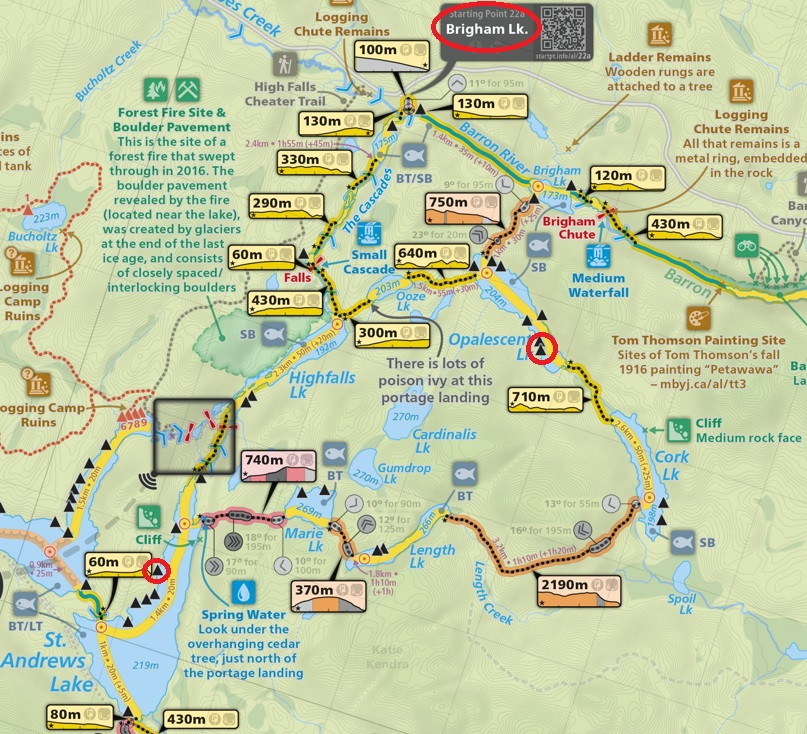
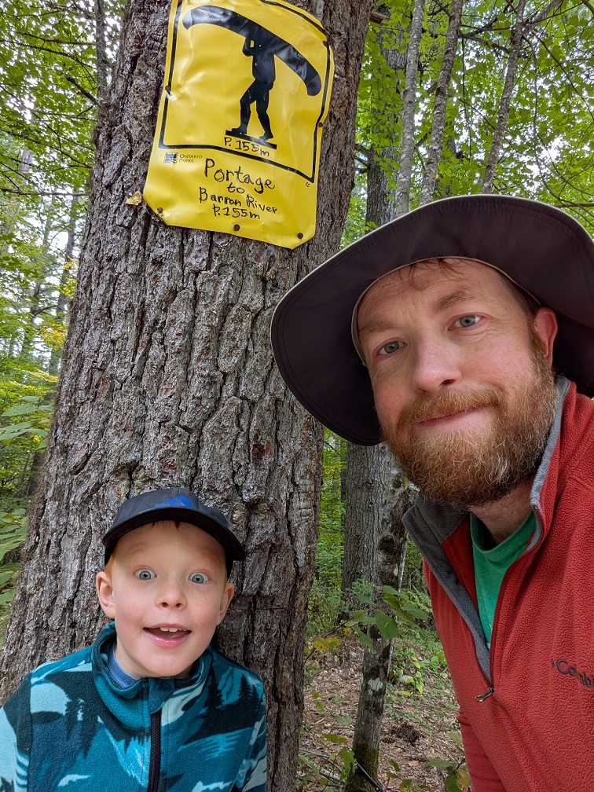
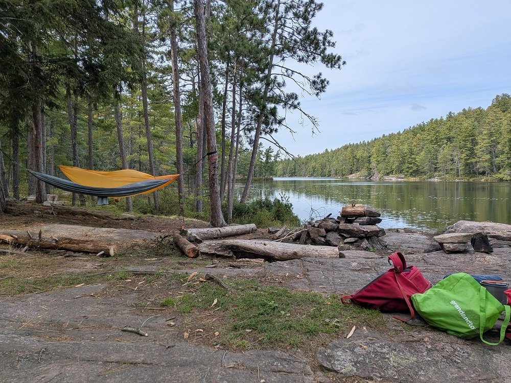
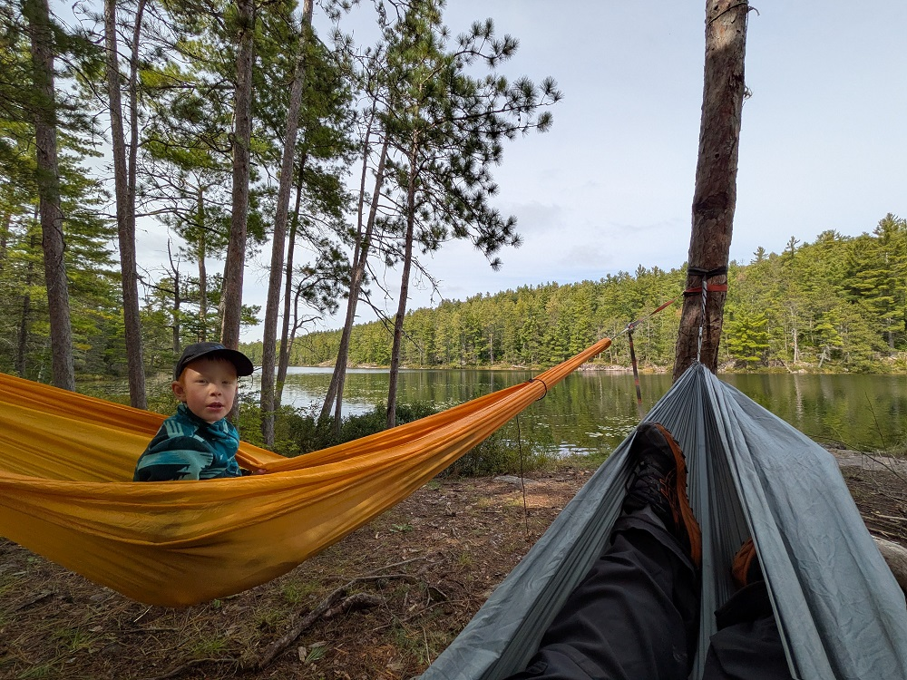
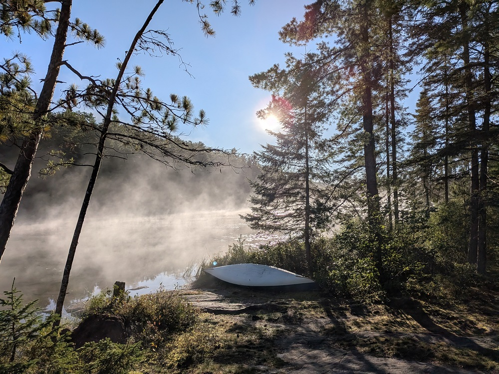
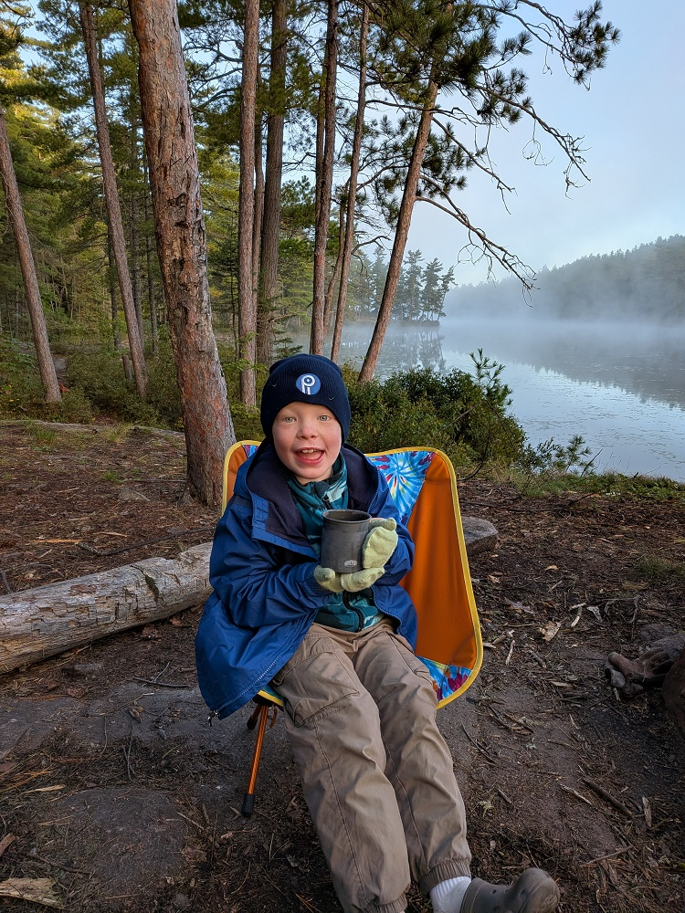
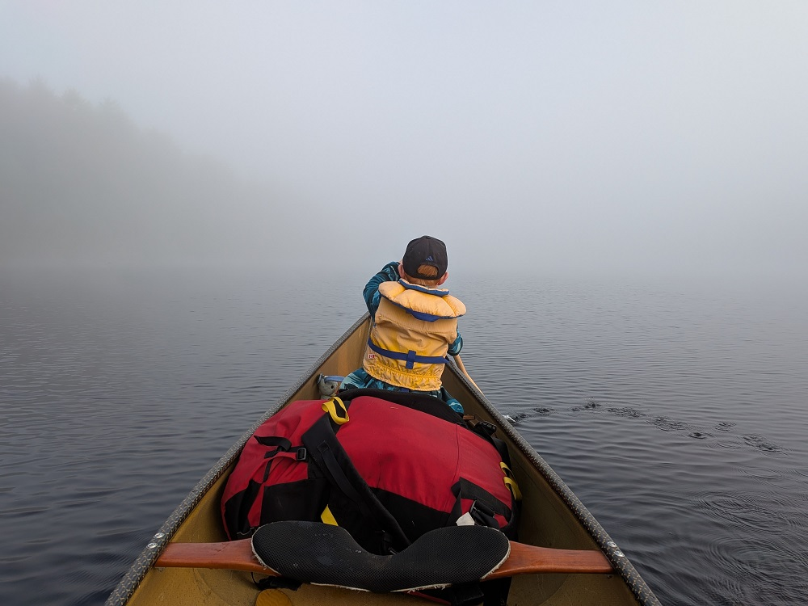
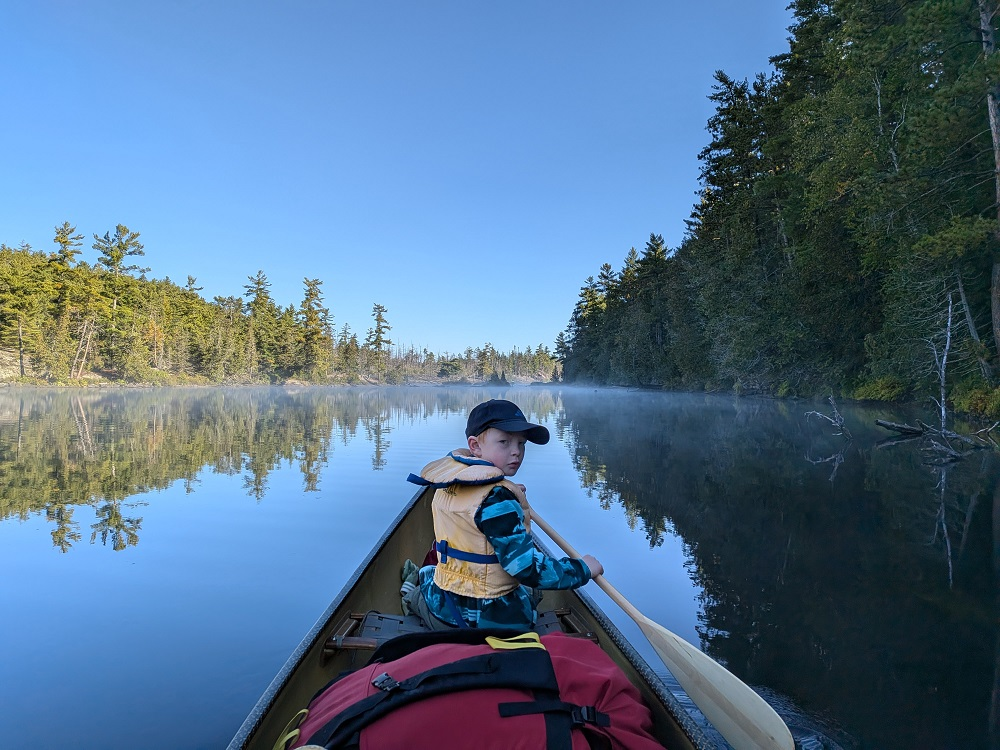
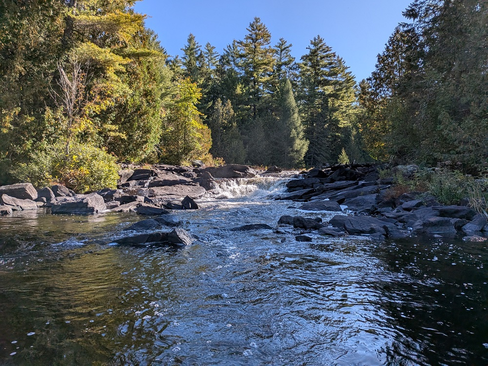

 |
2026 Sept 21-23 Opalescent and St. Andrews Lake Loop from Access Point Access Point 22a (Brigham Lake). Took the long way to St. Andrew's via Cork/Length/Marie, took long way home via the cascades.
2 days, 1 nights. 15km total distance, 6.9km total portage, longest portage 2.19km from Cork to Length Lake. Gordon's longest portage to date. |
 |
Starting at the portage down to the Barron River, he's pumped. |
 |
Down the Barron River towards Brigham Lake, nice little quiet area to paddle with decent cliffs. |
 |
Campsite at the end of Opalescent Lake. Really nice and open, but extremely close to another site. Luckily nobody else showed up. |
 |
View from the hammocks. We spent a lot of time here hanging out, but also paddled to the portage to Cork to look for frogs and grasshoppers. |
 |
Had a nice fire on Opalescent, lots of wood to be found well behind the campsite. Clearly this is a high-use lake. |
 |
Cool and misty morning, we took our time today and enjoyed some nice hot chocolate and coffee with our pancake breakfast. |
 |
Gordon also thought it was chilly but he's not phased. |
 |
Nice big site on St. Andrews with a good view of the lake. Really nice sunset looking across to the cliffs. Another great evening and fire was had. |
 |
Misty morning to start our paddle. |
 |
Nice morning views down High Falls Lake, very calm here. Gordon's paddling has gotten quite good, we now paddle the canoe going the correct way (as opposed to reversed). |
 |
Waterfall near the put-in for a portage down The Cascades. I wouldn't go this route again but I'm glad we went down it. Another great Dad/Gordon trip, this was the first 2-nighter for us. It felt like a true Canoe Trip and I think it will going forward. |